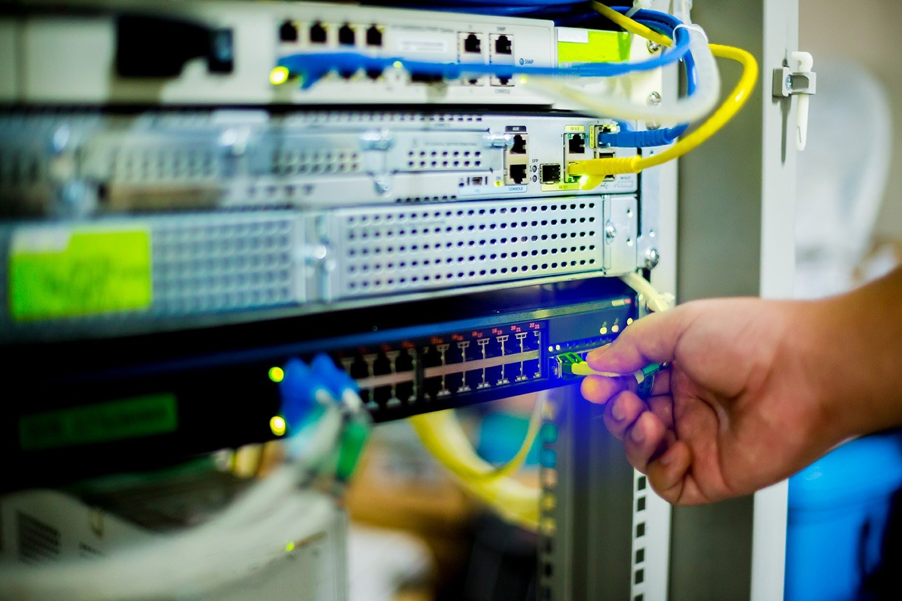

Hjem
1a - Datamaskiner og nettverk
Datamaskiner og komponenter
Nettverk og internett

1a Datamaskiner og netterk
Etter dette læringsløpet skal du kunne
kjenne til de viktigste komponentene i en datamaskin og forklare hvilke oppgaver de har
forklare hvordan maskinvare (eng. hardware) og programvare (eng. software) kommuniserer
forklare hva internett er, og hva det består av
forklare hvorfor standarder (protokoller) er nødvendig for internett
beskrive protokollene IP, TCP, HTTP og HTTPS